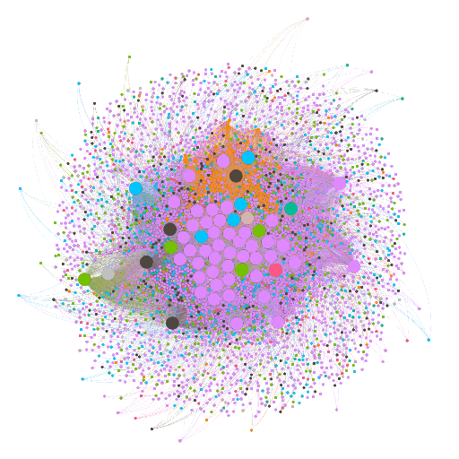
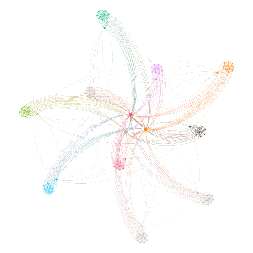
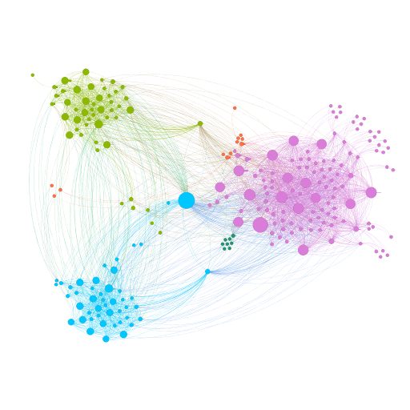
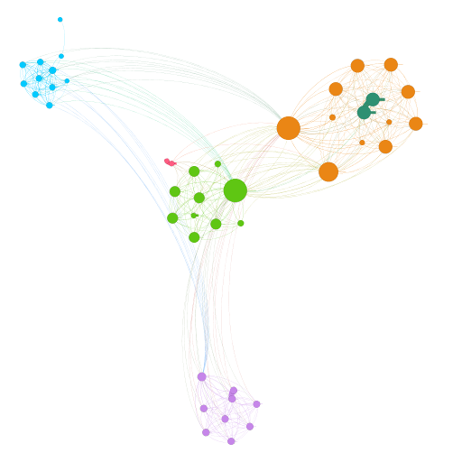
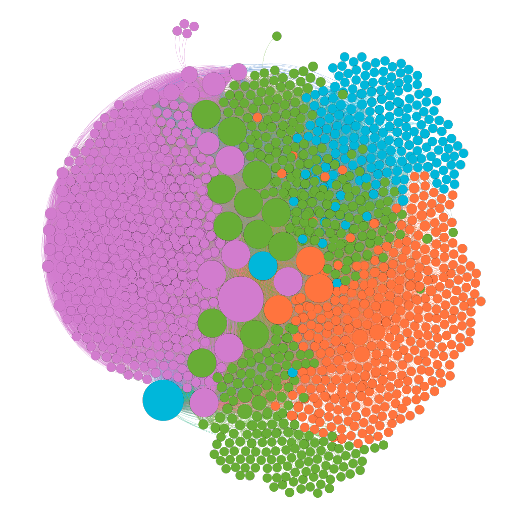
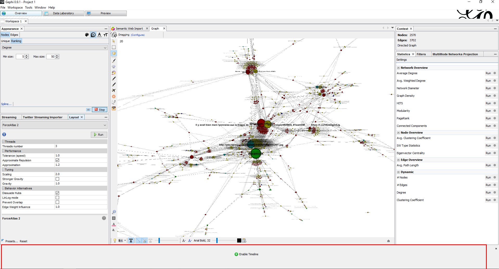

Visualiser un site web avec Gephi

Qui suis-je ?
@simongeorges, expert Drupal

Avez-vous déjà utilisé Gephi ?
À quoi sert Gephi ?
Comment représenter un site sous forme de réseau ?
Les nœuds sont les pages
Les relations sont les liens
Quelle utilisation en faire ?
Analyse de structure
Mise en évidence d'anomalies
Communication avec le client !
Analyse de structure
Analyse de structure
Site multilingue
Site annuel
Détection d'anomalies
Détection d'anomalies
Un spider trap sur la page d'accueil !
Attention aux paginations infinies, filtres à facets, ...
DÉMO
On peut aussi faire d'autres choses
Réseau de tweets / Analyse de viralité / followers
